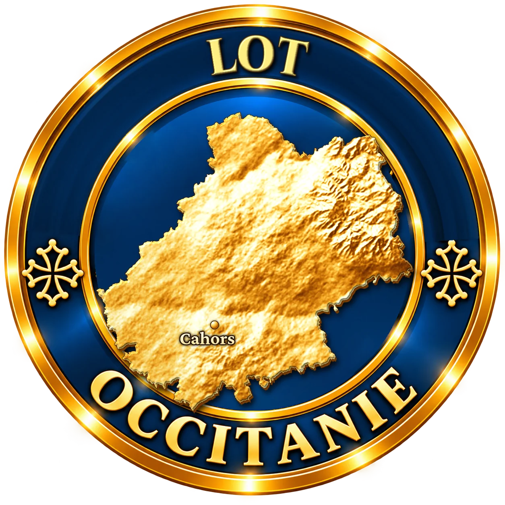
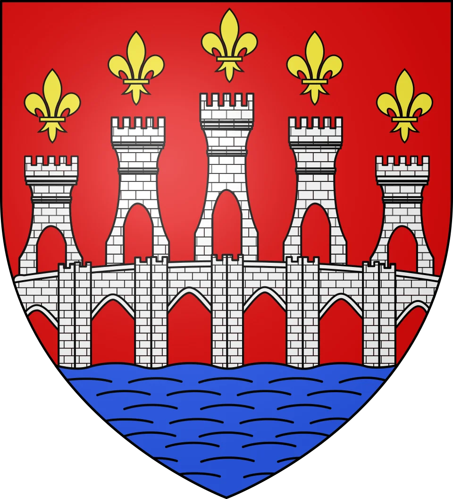
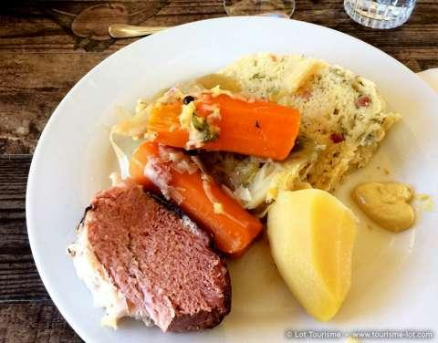

Une grosse boule de pâte levée qui gonfle doucement dans le bouillon, à côté du petit salé, du chou et des carottes. La mique est le « pain de secours » des fermes du Quercy : quand il n'y avait plus de pain en attendant la prochaine fournée, on la faisait cuire dans la marmite.
Jusqu'au XXe siècle, dans les campagnes du Quercy, du Périgord et du Limousin, le pain se cuisait au four du village, le four banal, à intervalles réguliers. Entre deux fournées, il arrivait que la maison en manque. On préparait alors une pâte avec de la farine, des œufs, de la graisse et un peu de levain, on la façonnait en boule, et on la faisait cuire dans le bouillon de la soupe : la mique était née. Le plat est attesté depuis le Moyen Âge.
Son nom viendrait de l'occitan mica, la mie. Selon les régions, on l'appelle aussi farce dure, farçun ou far levé, et chaque famille a sa recette : farine de blé ou de maïs, avec ou sans lardons, avec ou sans pain rassis.

Dans le Quercy, en basse Corrèze et dans le Périgord noir, la mique se sert le plus souvent avec du petit salé, de la poitrine ou du plat de côtes de porc demi-sel, et les légumes de la marmite : chou, carottes, navets, poireaux. Elle cuit dans le même bouillon et s'en imprègne. On la découpe ensuite en tranches, que l'on sert avec la viande. Le lendemain, les tranches restantes se font dorer à la poêle dans la graisse de canard.
La mique doit gonfler et flotter dans le bouillon : si elle reste au fond, c'est que la pâte n'a pas assez levé.
Il n'existe pas une recette unique de la mique : elle se transmet de génération en génération, avec les particularités de chaque village, voire de chaque maison. Plat de pauvres devenu plat de fête, on la retrouve aujourd'hui dans les fermes-auberges du Lot et lors des repas de village, en hiver.
Porc demi-sel, chou, bouillon et pâte levée : la mique appelle un rouge du Lot, franc et charpenté. Le cahors, vin du pays, s'impose.
Cahors
AOP Cahors · Lot (46)
Le malbec, appelé côt dans le Lot, donne un vin sombre aux arômes de fruits noirs et de réglisse, à la structure qui convient au petit salé.
Coteaux du Quercy
AOP Coteaux du Quercy · Lot (46)
Cabernet franc et malbec, plus souples et fruités.
Côtes du Lot rouge
IGP Côtes du Lot · Lot (46)
Un rouge simple et fruité, pour un repas de famille.
Marcillac
AOP Marcillac · Aveyron (12)
Plus frais et poivré, il allège ce plat d'hiver.
Mique viendrait de l'occitan mica, la mie.
On faisait la mique quand le pain manquait entre deux cuissons au four commun du village.
Selon les régions, la mique s'appelle aussi far levé, farçun ou farce dure.
Les tranches de mique de la veille se font dorer à la poêle, dans la graisse de canard.